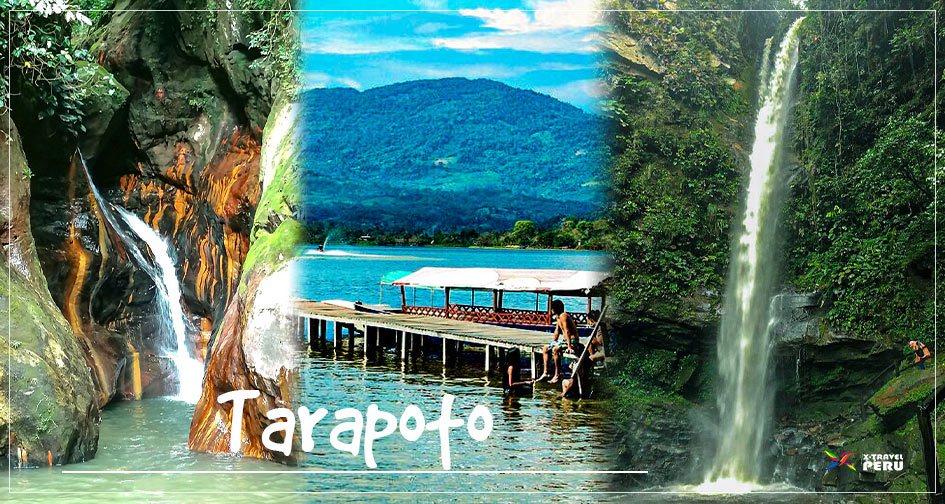
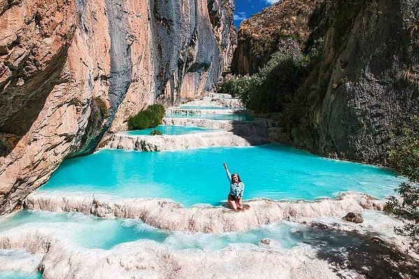

PERÚ
El Perú es uno de los países más variados del mundo. Un país multicultural, lleno de tradiciones, una laureada gastronomía y vastas reservas naturales. Posee 12 patrimonios mundiales reconocidos por Unesco y es dueño de 84 de las 117 zonas de vida que existen en el mundo. Perú está ubicado en la parte occidental de América del Sur y comparte sus fronteras con Ecuador, Colombia, Brasil, Bolivia y Chile. En su vasto territorio, de más de 1.2 millones de km², abarca tres regiones: Costa, Sierra y Selva. Su población actual supera los 31.5 millones de habitantes.
Machu Pichu
En lo alto de la montaña, grandes e impresionantes bloques de piedra unidos entre sí sin amalgama alguna conforman uno de los centros religiosos, políticos y culturales más importantes del imperio incaico: Machu Picchu.
Descubierta en 1911 por Hiram Bingham, la Ciudad Inca está dividida en dos grandes sectores: el agrícola, con una vasta red de andenes o terrazas artificiales, y el urbano, con bellas construcciones como el Templo del Sol.
Sus andenes de un verde intenso y la imponente cordillera que la rodean conforman un hermoso paisaje que supera cualquier expectativa.
Machu Picchu es hoy Patrimonio de la Humanidad y orgullo del Perú.
Lima
La capital gastronómica no solo del Perú, sino de Sudamérica y -por qué no decirlo- próximamente del mundo entero: quien llega a Lima queda encantado por la variada, deliciosa y prestigiosa comida que se sirve en sus mesas; con recetas milenarias, platillos fusionados con otras culturas y una sazón realmente única.
Sin embargo, el darle un buen trato y engreír a tu paladar no es lo único que conseguirás en las calles limeñas. No por nada es una de las regiones más importantes y visitadas del país incaico, que tiene un sinfín de actividades, atractivos y experiencias para todos los gustos. Si estás listo para combinar historia y aventura, la capital del Perú tiene que ser tu próximo destino.
Cuando estés en Lima, sentirás que el tiempo se pasa volando ya que siempre, pero siempre, tendrás algo qué hacer, qué descubrir o qué experimentar. Las ofertas hoteleras con más altos estándares de calidad están ubicadas en los distritos de Miraflores y San Isidro, que están situados céntrica y estratégicamente, muy cerca al mar (sí, con actividades acuáticas como surf, entre otros, aseguradas), y son seguros para los turistas. Desde estos dos puntos, es muy sencillo trasladarse a los diversos puntos de la ciudad, ya que son espacios concurridos.
Tarapoto
La Ciudad de las Palmeras, de clima tropical húmedo, concentra gran parte de la actividad turística y comercial de la región, siendo la tercera ciudad más buscada7 después de Lima y Cusco y una de las más visitadas por los peruanos8; Está rodeada por el Norte por el área de conservación regional de la Cordillera Escalera dentro del bosque húmedo tropical sudamericano y por el sur con un valle fértil con cultivos de arroz, maíz, café, cacao, tabaco y diversos productos agrícolas, con bosques estacionalmente secos neotropicales.
Ayacucho
se encuentra la ciudad de Ayacucho, conocida como “Cuidad de las Iglesias”, por sus numerosos templos e iglesias y “Ciudad Señorial” por su arquitectura, arte y tradición. “Capital del Arte Popular y de la Artesanía del Perú”; de clima templado, seco y brillo solar todo el año, capital de la Provincia de Huamanga, del departamento de Ayacucho.
Paquetes
Conoce Perú
Peru 7 dias/ 6 noches
lugar a visitar
lima/machupichu/ayacucho/tarapoto
$5,000.00